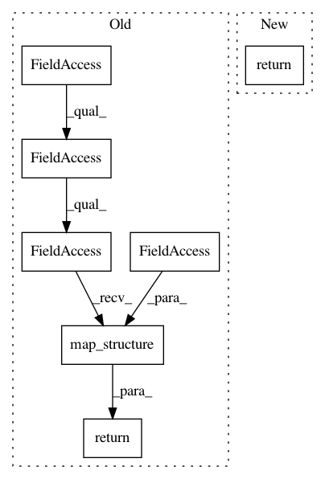

ceee90b1acfb5ab44ed40fa45d619a2fbb2a80f2,privacy/optimizers/gaussian_average_query.py,GaussianAverageQuery,accumulate_record,#GaussianAverageQuery#Any#Any#Any#,75
Before Change
l2_norm_clip = params
clipped, _ = tf.clip_by_global_norm(record, l2_norm_clip)
return tf.contrib.framework.nest.map_structure(tf.add, sample_state,
clipped)
def get_noised_average(self, sample_state, global_state):
Gets noised average after all records of sample have been accumulated.
After Change
Returns:
The updated sample state.
return self._sum_query.accumulate_record(params, sample_state, record)
def get_noised_average(self, sample_state, global_state):
Gets noised average after all records of sample have been accumulated.
In pattern: SUPERPATTERN
Frequency: 3
Non-data size: 7
Instances
Project Name: tensorflow/privacy
Commit Name: ceee90b1acfb5ab44ed40fa45d619a2fbb2a80f2
Time: 2018-12-18
Author: gardener@tensorflow.org
File Name: privacy/optimizers/gaussian_average_query.py
Class Name: GaussianAverageQuery
Method Name: accumulate_record
Project Name: tensorflow/privacy
Commit Name: ceee90b1acfb5ab44ed40fa45d619a2fbb2a80f2
Time: 2018-12-18
Author: gardener@tensorflow.org
File Name: privacy/optimizers/gaussian_average_query.py
Class Name: GaussianAverageQuery
Method Name: initial_sample_state
Project Name: tensorflow/privacy
Commit Name: ceee90b1acfb5ab44ed40fa45d619a2fbb2a80f2
Time: 2018-12-18
Author: gardener@tensorflow.org
File Name: privacy/optimizers/gaussian_average_query.py
Class Name: GaussianAverageQuery
Method Name: get_noised_average